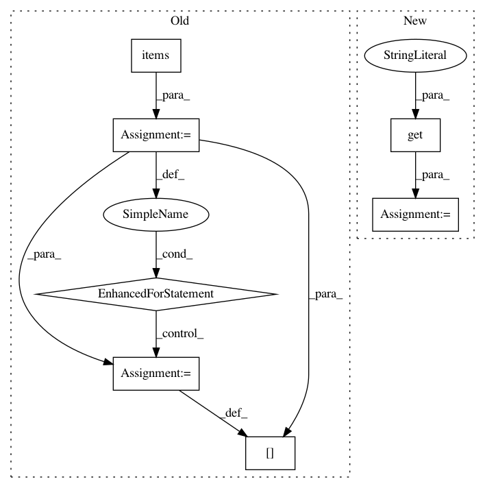

7a4f4148317f7274c0c88095c037e93f95b1d00d,python/mead/tasks.py,Task,_create_embeddings,#Task#Any#Any#Any#,153
Before Change
embeddings[name] = baseline.RandomInitVecModel(dsz, vocabs[name], unif_weight=unif)
out_vocabs = {}
for key, value in embeddings.items():
out_vocabs[key] = value.vocab
return embeddings, out_vocabs
@staticmethod
def _log2json(log):
After Change
logging.basicConfig(level=logging.DEBUG)
def _create_embeddings(self, embeddings_set, vocabs, features):
backend = self.config_params.get("backend", "tensorflow")
if backend == "pytorch":
import baseline.pytorch.embeddings as embeddings
else:
In pattern: SUPERPATTERN
Frequency: 3
Non-data size: 7
Instances
Project Name: dpressel/mead-baseline
Commit Name: 7a4f4148317f7274c0c88095c037e93f95b1d00d
Time: 2018-09-25
Author: dpressel@gmail.com
File Name: python/mead/tasks.py
Class Name: Task
Method Name: _create_embeddings
Project Name: dpressel/mead-baseline
Commit Name: da1e8c2de9b265dcb18256a0a087165faf138b42
Time: 2019-01-14
Author: blester125@users.noreply.github.com
File Name: python/baseline/pytorch/seq2seq/model.py
Class Name: EncoderDecoderModelBase
Method Name: predict
Project Name: reinforceio/tensorforce
Commit Name: 846a51636bca9f870c518add3ff604a7eb9b1bc9
Time: 2020-04-25
Author: luca.anzalone.dev@gmail.com
File Name: tensorforce/environments/carla_environment.py
Class Name: CARLAEnvironment
Method Name: _get_observation